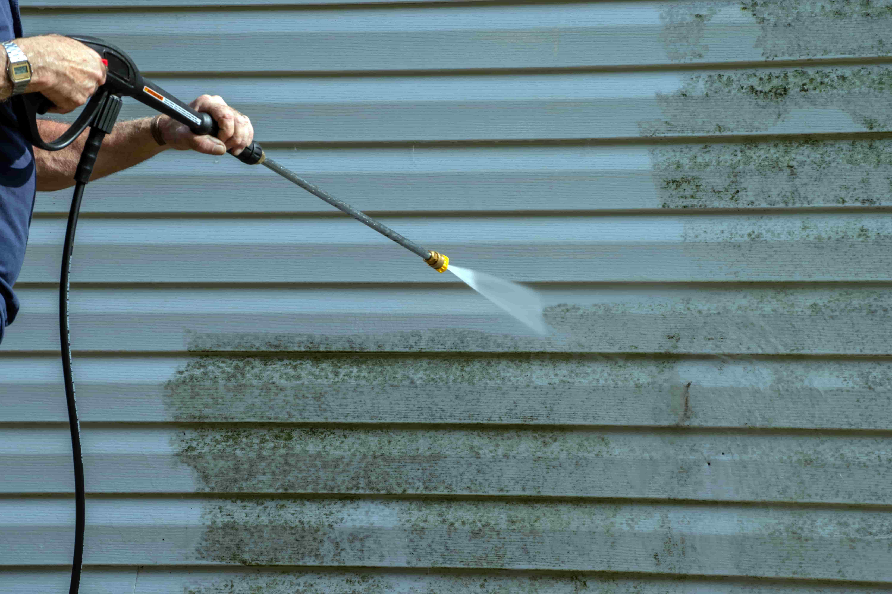
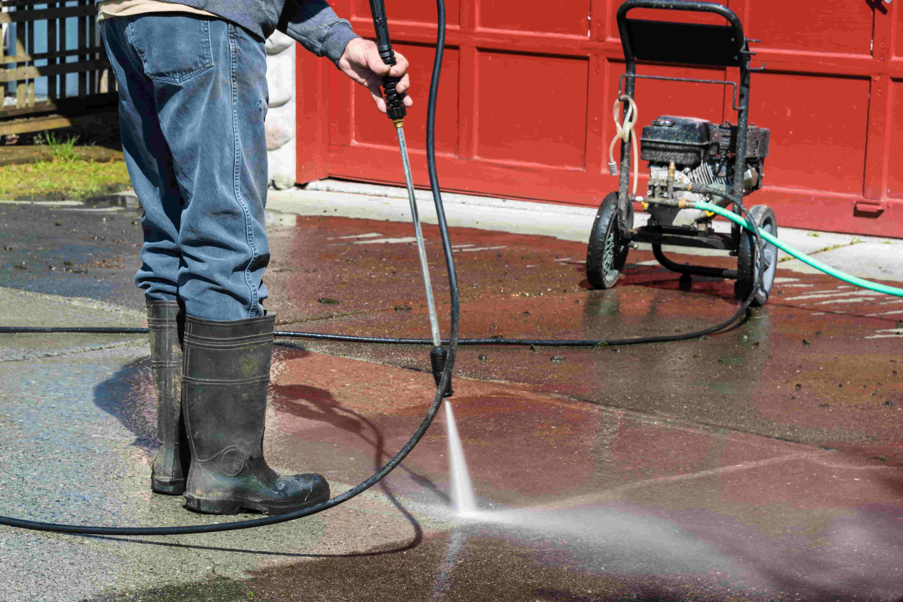
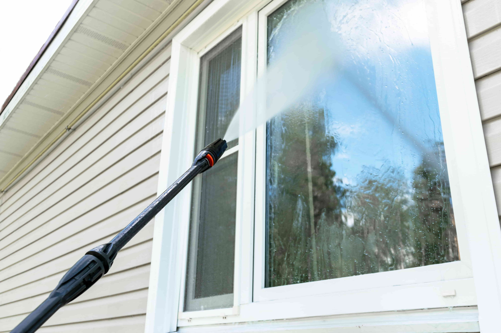
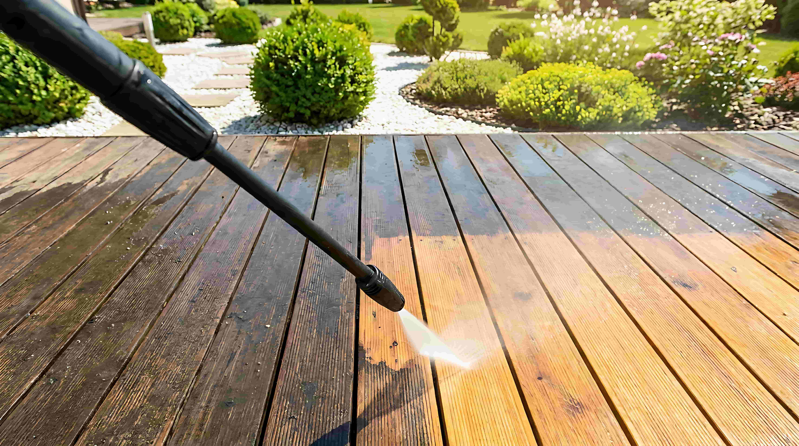
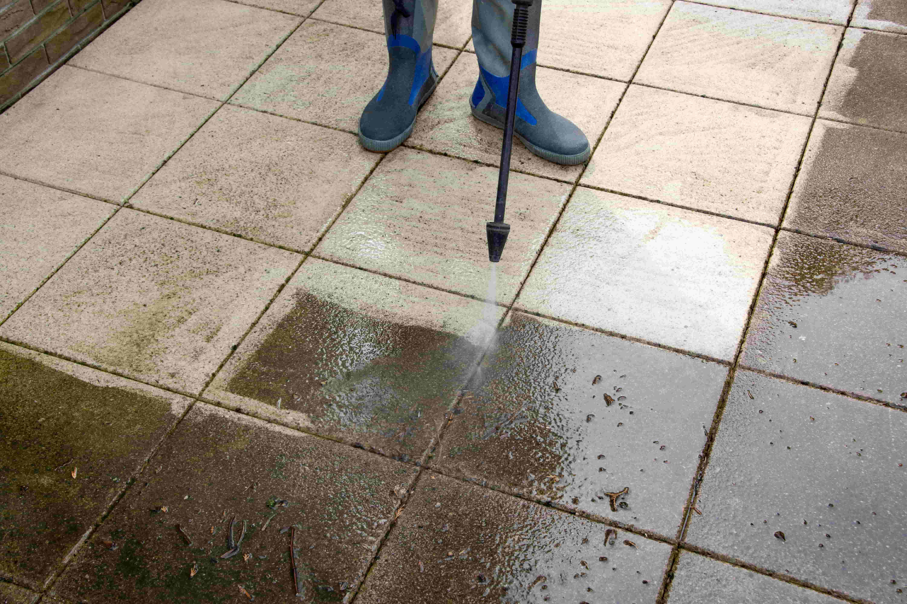

Pressure Washing
Restore your home's exterior appearance and protect your investment with professional pressure washing. We remove years of built-up dirt, mold, mildew, and algae from every outdoor surface — safely and thoroughly.

Restore Your Home's Curb Appeal
Montgomery County's humid mid-Atlantic climate creates the perfect conditions for mold, mildew, algae, and organic staining to take hold on your home's exterior surfaces. Over time, your siding loses its color, driveways and walkways develop dark streaks, decks turn gray and slippery, and gutters show ugly black tiger stripes. Professional pressure washing removes all of that buildup — from house siding and brick to concrete driveways, flagstone walkways, wooden decks, patio pavers, fence lines, and gutter exteriors — bringing every surface back to its original appearance.
Not every surface can handle the same water pressure. That's why Leo General Contracting uses both high-pressure washing for durable surfaces like concrete and brick, and low-pressure soft washing for more delicate materials like vinyl siding, painted wood, stucco, and roof shingles. Soft washing relies on specialized cleaning solutions that break down organic growth at the root, so surfaces stay cleaner longer without risk of damage. Whether you need a full house wash before painting, a driveway cleaning after winter, or a deck restoration before summer entertaining, we match the right technique to every surface on your property.
check_circle What's Included
- check_circleHouse siding and exterior wall washing
- check_circleDriveway and garage floor cleaning
- check_circleWalkway and patio surface cleaning
- check_circleDeck and fence cleaning and prep
- check_circleGutter exterior cleaning
- check_circleSoft washing for delicate surfaces
- check_circlePre-painting surface preparation
Why Homeowners Choose Us for Pressure Washing
Surface-Safe Techniques
We adjust pressure levels and cleaning methods for each surface — high-pressure for concrete and brick, soft washing for siding and painted wood — so nothing gets damaged in the process.
Thorough Coverage
We don't just hit the obvious spots. Every surface gets full attention — under eaves, between pavers, along fence lines, and around downspouts — so your entire property looks consistently clean.
Prep for Paint & Stain
Planning to paint or stain? Pressure washing is the essential first step. We prep surfaces to ensure proper adhesion, giving your new finish a longer, cleaner life.
Recent Pressure Washing Work

Driveway cleaning

House siding wash

Deck cleaning

Patio restoration
Pressure Washing Across Montgomery County
Pressure Washing Questions
Ready for a Cleaner Exterior?
Get a free estimate for professional pressure washing. Licensed, bonded & insured — MHIC #168342.